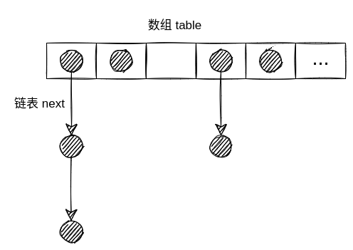
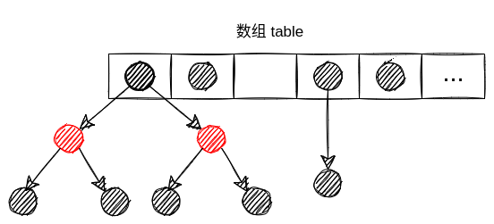
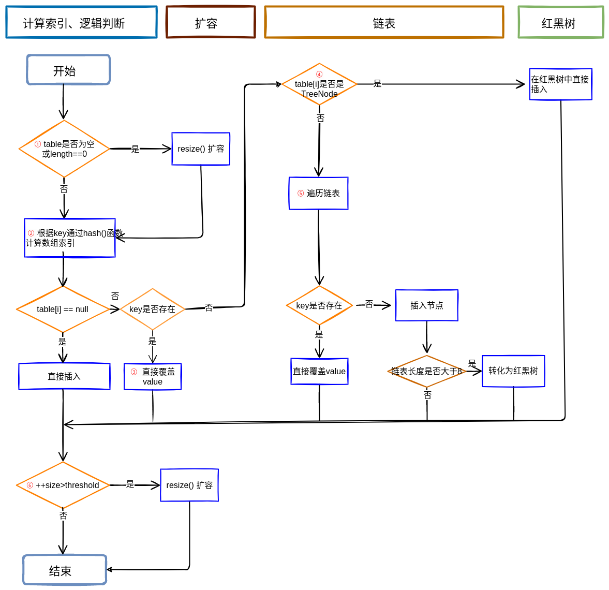
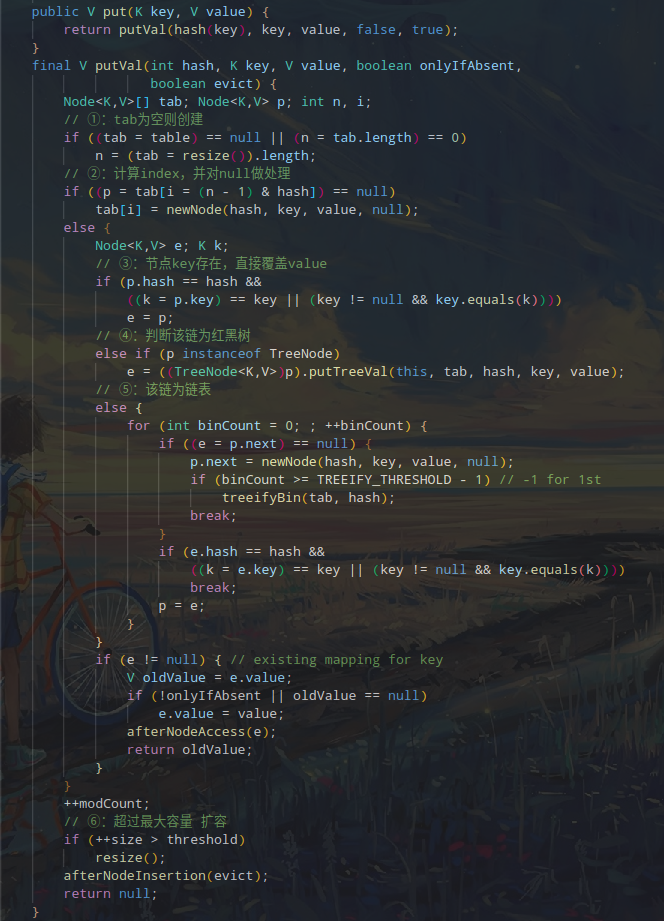
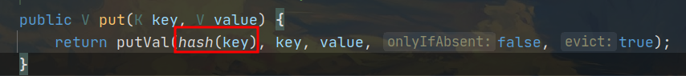
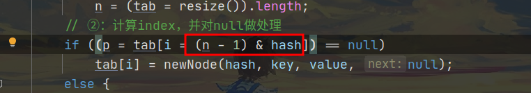

HashMap那些事儿
HashMap 在 Java 中是一个使用高频的数据结构，JDK1.8 以后 HashMap 进行了一次翻天覆地的改变。
本文基于 JDK1.8 分析一下 HashMap
存储结构转换
在 JDK1.8 以前 HashMap 采用的是数组+链表的结构，JDK1.8 以后又引入了红黑树的结构，会在链接和红黑树之间转换，结合源码分析一下 HashMap 对数组+链表和数组+红黑树的转换
首先看一下数据的存储结构
1 | transient HashMap.Node<K, V>[] table; |
HashMap 定义了一个 Node 的数组，Node 的定义
1 | static class Node<K, V> implements Entry<K, V> { |
Node 中包含了四个属性hash、key、value、next。
key、value是调用 HashMap 的put()方法传进来的。hash是判断 key 是否重复的关键next用于构建链表
所以 HashMap 默认是一个数组+链表的形式

链表是否要转换成红黑树，是在调用put()方法添加数据时判断的，跟着源码分析链表转换成红黑树的过程
put()方法调用的是putVal()方法，
1 | final V putVal(int hash, K key, V value, boolean onlyIfAbsent, boolean evict) { |
无关的部分省略了，while 循环中遍历链表中的数量，如果数量大于等于 8，调用treeifyBin()方法，
在treeifyBin()中有一行
1 | hd.treeify(tab); |
treeify()方法会将链表转换为红黑树。同时会将链表中所有节点由Node结构转换为TreeNode结构。
TreeNode继承自java.util.LinkedHashMap.Entry，java.util.LinkedHashMap.Entry又继承自Node
那么Node就是TreeNode的父类，所以这样转换是不会有问题的。
经过treeifyBin()后存储结构变为

put 方法的具体逻辑
put方法中可以划分为 4 个部分，看一下方法的执行流程图。

结合一下源码

结合流程图和源码，对 put 的过程做一个描述
①：判断 tab 是否为空，如果为空说明 table 还未初始化，先对数组进行初始化
②：先计算在数组中的位置，并判断该位置是否为空，如果为空，则直接赋值。然后跳转到⑥
③: 判断节点 key 是否存在，如果存在直接额赋值，不存在则执行 ④
④：判断是否是红黑树，如果是则添加到树中，否则进入到⑤
⑤：为链表的情况，判断长度是否大于等于TREEIFY_THRESHOLD - 1，如果是，先将链表转花为红黑树，然后添加到树中。如果不是直接添加到列表中。
⑥：插入成功后，判断实际存在的键值对数量size是否超多了最大容量threshold，如果超过，进行扩容。
扩容
当 HashMap 键值对大于阀值时或者初始化时，会进行扩容。
阀值是threshold的值，是由数组的长度和loadFactor(默认值是0.75)决定的，threshold = length * loadFactor
HashMap 的扩容是在resize()方法里进行的，结合源码分析一下 HashMap 是怎么扩容的，因为 JDk1.8 引入了红黑数，所以代码比较长，就不贴全部的代码了，主要分析一下关键步骤。
先看一下初始化的几个变量
1 | int oldCap = (oldTab == null) ? 0 : oldTab.length; //现在容器的大小 |
注意： 扩容不只是改变容器的大小，还要改变阀值的大小
1. table 容器不为空的情况
1 | if (oldCap > 0) { |
- 数量已经大于最大的容量，则将阀值设置为整数最大值，不再扩容
newCap = oldCap << 1扩容后仍然小于最大容量 并且 oldCap 大于默认值 16，双倍扩容阀值 threshold
2. 旧的容量为 0，但 threshold 大于零
1 | else if (oldThr > 0) |
出现这种情况说明有参构造有 initialCapacity 传入，那么 threshold 已经被初始化成最小 2 的 n 次幂，所以直接将该值赋给新的容量
3. 旧的容量为 0，threshold 也等于 0
1 | else { |
这种情况说明是通过无参构造函数创建的，也就是Map map = new HashMap()这种格式，那么都被赋予默认的大小（默认 16）和默认的阈值（默认 16 * 0.75）
4、 计算新的阈值
1 | if (newThr == 0) { |
这种情况说明是在有参构造时，默认的loadFactor被重新赋值，如果loadFactor大于 1，那么阈值会比容量大，有可能会超出最大容量，所以要重新计算。
还有一种情况在第一步中newThr = oldThr << 1，左移超出范围后会置0，也要重新计算。
扩容也就这些了，剩下的代码是扩容后，元素重新排列的逻辑了。
注意：扩容的大小 （newCap = oldCap << 1） << 相当于乘2,所以HashMap的容量总是2的n次方
确定key在数组中的位置
在调用put()方法添加新数据时，在put()方法内部，调用hash()操作key，得到一个hash值

在putVal()方法中，在第②步的时候确定key在数组中的位置

hash()方法的实现
1 | static final int hash(Object key) { |
在key等于null的情况下，会直接放到0处，不为null时，获取key的hashCode后，将hashCode的高16位和低16位进行异或。
获取位置的整个过程有两个问题：
(n - 1) & hash是怎么获取到位置的？
n是table数组的长度，而数据的长度又总是2的n次方，所以(n - 1) & hash正好是对n取模。
( (n - 1) & hash) ) == (hash % n), 这是一个非常巧妙的设计，用&比%具有更高的效率。- 将
hashCode的高16位和低16位进行异或的作用是什么？
hashCode是一个int类型的数据，占4个字节 32位，而在HashMap中默认的长度是DEFAULT_INITIAL_CAPACITY = 1 << 4（即2的四次方16），要远小于int类型的范围，如果直接用hashCode进行运算，那么hashCode的高位部分对结果来说不会起太大作用，这样会增加hash碰撞的概率。所以用高16位和低16位进行异或来降低hash冲突的概率
使用任意类作为key的情况
HashMap判断key的位置是基于hashCode，如果要使用任意类作为key，必须要考虑是否要重写hashCode方法。默认的hashCode返回对象的是对象地址，直接使用使用可能会有问题。用伪代码举个例子
1 | public class User{ |
这种情况下尽管user1和user2的属性都相同，但是user2并不会覆盖user1,因为user1和user2是两个对象，地址不相同，hashCode也不相同。
注意： 重写hashCode()方法时，要注意equals() 和 hashCode() 相关的规则
为什么String、Integer等包装类可以作为key
- String、Integer内部已重写了equals()、hashCode()等方法。
- 都是final类型，保证了不可更改性，不会存在获取hash值不同的情况
线程安全问题
在put第①步
1 | if ((tab = table) == null || (n = tab.length) == 0) |
当第一个线程运行到这后已经拿到了数组数据和长度，如果这时让出CPU，而第二个线程进来后把数组数据改变了，那么当第一线程再次拿到CPU后，继续运行的话，会把第二个线程的数据覆盖掉，造成数据丢失。
在put第⑥步
1 | if (++size > threshold) |
++size并不是原子操作，当多个线程都执行这行代码时，会存在丢失数据的情况。
来个例子验证一下：
1 | public class HashMapTreadTest extends Thread{ |
上面代码功能是向map里添加10000条数据，开启5个线程同时操作，运行完后打印的数量并不是10000，说明数据丢失。